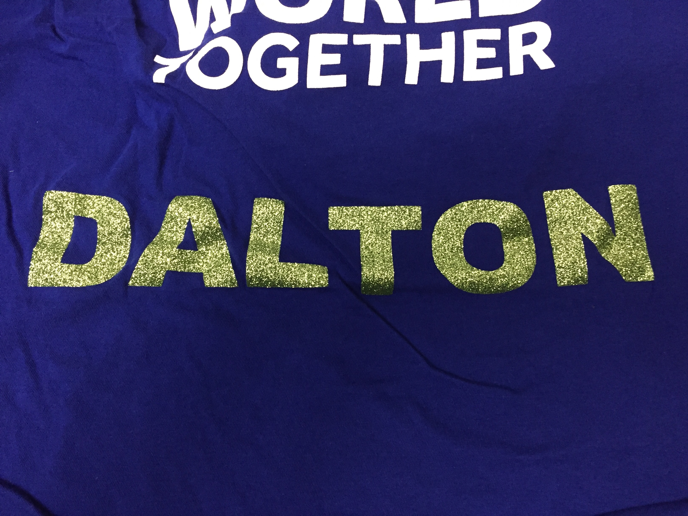

Once again, COVID-19 sucks and has messed everything up. I was supposed to vinyl cut a design onto a sweatshirt this week. Yet, because of some personal failings I don't have sweatshirt and because of COVID closeing campus, I can't even vinyl cut onto the sweatshirt I don't have.
Most simply, vinyl cutting takes the negative space of a CAD or CAM file and cuts out the rest, i.e. it cuts out lines and blocks from vinyl. After being cut, you can peel away the excess material, leaving only what you want. In a sense, this is subtractive manufacturing, and we therefore include it in this course.
More specifically, Starting in CAD, CAM, or image sofeware, design whatever you want to print. Then upload this into the software for whatever printer you are using.
Here you can make any needed or final changes. For example, in my attached file, I have not yet flipped my image. Because of how the vinyl is applied, the image has to be flipped over the y-axis. This can typically be done, as I had planned to, in the cutting software.
After loading your piece of vinyl, the vinyl cutter uses a series of wheels to move the blade forward and back as the head moves left and right. This is how it cuts on two axes.
Once you are finished, you remove the unwanted material by pulling it off the vinyl sheet and discarding it. This should leave you with just the vinyl you want to add to your clothing.
Using heat, the vinyl is attached to the clothing, though it will be permanently raised. (I actually have a picture for this part. Sorry about the lack of pictures, but I didn't take any before the fiber lab closed down)
Once heat is applied, you can peel off the back plastic layer and your clothing is fully customized!!!
I never quite finished my design, and it didn't seem worth while to spend a lot of time on a project that would never be finished, so instead I present to you my final consept file.
While the end result would have need a bit of tinkering and the aformentioned flip, all the parts are here.
The quote is one from the ancient Roman poet Catullus, a famous love poet. It is one of the shortest poems in Latin, but it packs a punch. It is, I must admit, one of my favorites. If you wish to see the text, you can either open my file or search Catullus 85, but I will not provide the original Latin here. The translation is as follows.
"I hate and I love. Why do I put myself through it all, you might find yourself asking. / I do not know, but I feel it happening and I am pulled apart at the seams"
The art is meant to represent the two sides of himself, maybe even the two lovers, being pulled away from eachother, so close to letting go, yet still wanting to hang on.
My Design files for week 8 can be found here.